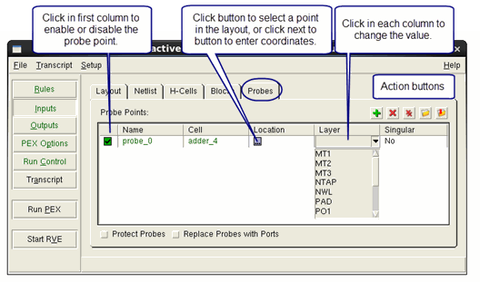

Specifying Probe Points in Calibre Interactive PEX
You can specify
probe points in your parasitic model using Calibre Interactive.
Probe points are used to verify timing from specific points on each
net.
Prerequisites
You are running Calibre Interactive PEX, and have specified the rule file, input layout, and input netlist, as described in the following sections:
Procedure
- Do one of the following, depending
on whether you have an existing probe file:
Click the button to select and load an existing probe file.
Click the
 button
to manually add a probe point.
button
to manually add a probe point.
The interface should look similar to that shown in the following figure.
Figure 1. PEX Probes Tab